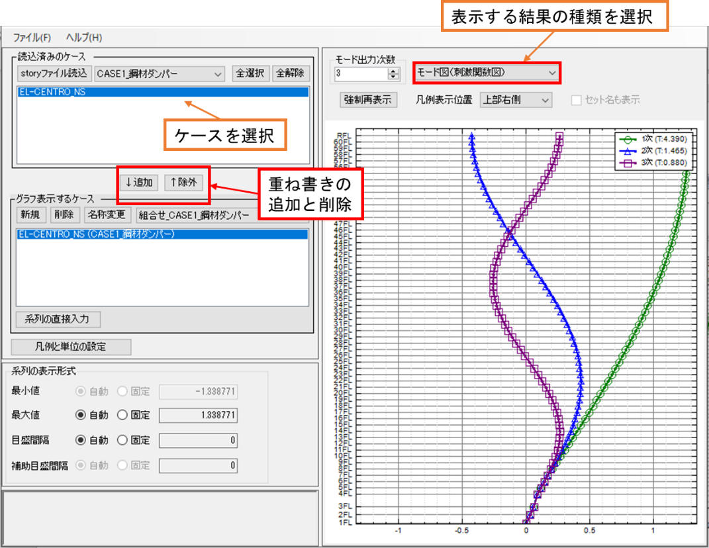

結果のグラフ表示
結果Viewerの表示
「クイック表示」では選択したタイプの組合せ、「組合せ選択表示」では左のツリーで選択したケースの組合せで計算結果をグラフで表示することができます。結果Viewerが起動すると計算が完了したケースが設定されています。

ひずみの固有値表、最大応答値表、Ci表
メインウィンドウの右上にある「ひずみの固有値表」「最大応答値表」「Ci表」をクリックするとそれぞれの表が表示されます。
固有値を計算した表になります。ばらつきや条件に従った結果を表示することができます。 条件については、「解析条件パネル」で設定した条件がここに表示されます。
最大応答値を示した表になります。上部構造や免震層、下部構造の応答がまとめられています。
各層の最大応答値を示した表になります。応答の条件等を選択して結果を表示します。
履歴の表示方法
「階重量」「復元力特性」「制振装置」「免震装置」パネルの左上をクリックすることで、履歴が表示されます。
計算結果の時刻歴表示
計算結果の履歴表示
解析結果出力ファイル
解析結果出力ファイルはプロジェクトファイルのフォルダに出力されます。 プロジェクトファイルのフォルダにプロジェクトファイルと同名のフォルダが作成され、その中に各セット毎のフォルダが作成されます。解析結果出力ファイルは全てこの[セット名]フォルダ内に出力されています。